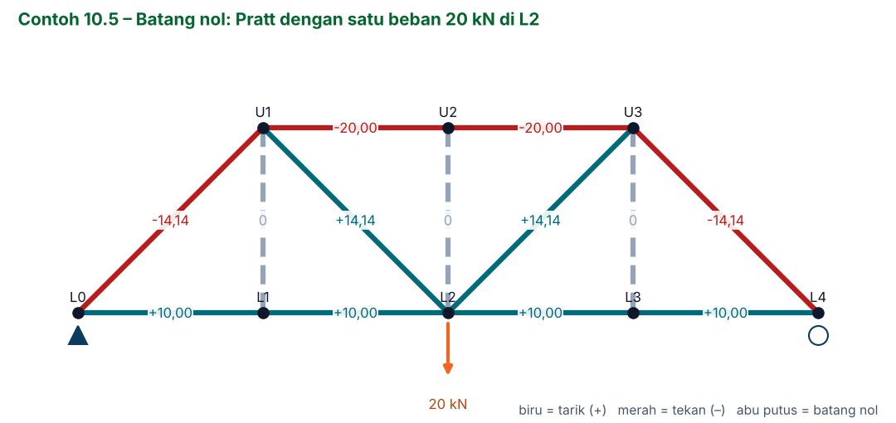

Minggu 11 • Sub-CPMK 4.1 • CPMK-4 • CPL 2 / IK 2.2 • Estimasi belajar: 120 menit mandiri + 220 menit kelas/studio + latihan tambahan 60 menit
2. Capaian Pembelajaran
Sub-CPMK 4.1: Mahasiswa mampu menghitung gaya batang rangka batang.
| Kode | Indikator | Level Bloom |
|---|---|---|
| 4.1.a | Menyebutkan asumsi rangka batang ideal dan tipe rangka (Pratt, Howe, Warren) | C1–C2 |
| 4.1.b | Memeriksa kestabilan dan sifat statis tertentu dengan m + r = 2j | C3 – memeriksa |
| 4.1.c | Mengidentifikasi batang nol | C4 – mengidentifikasi |
| 4.1.d | Menghitung gaya batang dengan metode titik buhul | C3 – menghitung |
| 4.1.e | Menghitung gaya batang tertentu dengan metode potongan (Ritter) dan memilih metode yang efisien | C3–C4 |
Kriteria (RPS): gaya batang (tarik/tekan) benar dengan metode titik buhul dan Ritter.
3. Peta Konsep Bab
Kesetimbangan titik (Bab 3) → (10.4) metode titik buhul: ΣFx = 0, ΣFy = 0 tiap titik
Kesetimbangan benda tegar (Bab 3) → (10.5) metode Ritter: potong ≤ 3 batang, ΣM = 0
Rangka ideal (10.1) → hanya gaya aksial tarik/tekan
Kestabilan (10.2) m + r = 2j; batang nol (10.3)
Gaya batang → batang kritis → Bab 11 (proyek jembatan rangka)
4. Apersepsi
Demonstrasi model rangka: dosen menekan model persegi dari stik yang disambung pin – model langsung “miring” menjadi jajar genjang. Setelah ditambah satu batang diagonal, model menjadi kaku. Mengapa?
Kasus nyata: rangka atap baja ringan gudang, jembatan rangka baja di jalan provinsi, dan menara BTS. Batang mana yang tertarik dan mana yang tertekan?
Gambar 10.1. Rangka batang di sekitar kita (ilustrasi baru, sumber: dokumen penulis)
Teks alternatif: Tiga panel: kuda-kuda baja ringan rumah, jembatan rangka baja di atas sungai, menara telekomunikasi; bentuk segitiga disorot.
Prompt gambar: Educational collage illustration of truss structures in Indonesia: cold-formed steel roof truss of a house, steel truss bridge over a river, telecommunication tower, triangular units highlighted with glowing cyan lines, navy background, flat vector, no text
5. Uraian Materi
10.1 Rangka Batang Ideal dan Tipenya
Rangka batang (truss) adalah susunan batang lurus yang membentuk segitiga-segitiga. Untuk analisis, dipakai asumsi rangka ideal:
Batang disambung di ujung dengan sendi (titik buhul) tanpa gesekan.
Beban dan reaksi hanya bekerja di titik buhul.
Berat batang diabaikan atau dibagi ke titik buhul.
Akibatnya setiap batang hanya memikul gaya aksial: tarik (+) atau tekan (–).
| Tipe | Ciri | Penggunaan umum |
|---|---|---|
| Pratt | Diagonal miring ke arah tengah bentang (turun ke tengah); pada beban gravitasi diagonal tertarik, vertikal tertekan/kecil | Jembatan baja bentang pendek–menengah |
| Howe | Kebalikan Pratt: diagonal tertekan, vertikal tertarik | Jembatan/atap kayu (kayu kuat tekan) |
| Warren | Segitiga sama kaki tanpa (atau dengan sedikit) batang vertikal; diagonal bergantian tarik–tekan | Jembatan, rangka atap bentang panjang |
10.2 Kestabilan dan Statis Tertentu
Keterangan: m = jumlah batang; r = jumlah reaksi tumpuan; j = jumlah titik buhul. Setiap titik buhul memberi 2 persamaan (ΣFx, ΣFy). Batasan: m + r < 2j → labil; m + r > 2j → statis tak tentu; m + r = 2j belum menjamin stabil – susunan harus tersusun dari segitiga.
10.3 Batang Nol
Batang nol adalah batang dengan gaya nol untuk pembebanan tertentu. Mengenalinya lebih dulu menghemat hitungan. Dua aturan:
Aturan 1: pada titik buhul dengan dua batang tidak segaris dan tanpa beban/reaksi, kedua batang itu nol.
Aturan 2: pada titik buhul dengan tiga batang, dua di antaranya segaris dan tanpa beban/reaksi, batang ketiga nol.
Batang nol tetap dibutuhkan: menjaga kestabilan, memperpendek panjang tekuk batang tekan, dan memikul beban lain (misalnya angin).
10.4 Metode Titik Buhul
Hitung reaksi tumpuan seluruh rangka.
Pilih titik buhul dengan paling banyak 2 gaya batang yang belum diketahui (biasanya di tumpuan).
Gambar DBB titik; anggap batang tarik; tulis ΣFx = 0 dan ΣFy = 0.
Lanjut ke titik berikutnya; gaya yang sudah diketahui dipakai sebagai gaya luar.
Titik terakhir menjadi pemeriksaan.

Gambar 10.2a. Gaya batang rangka segitiga Contoh 10.2.

Gambar 10.2b. Gaya batang rangka Pratt Contoh 10.3 (kN).
10.5 Metode Potongan (Ritter)
Jika hanya perlu gaya beberapa batang di tengah, metode titik buhul terlalu panjang. Metode Ritter memotong rangka melalui paling banyak tiga batang yang belum diketahui, lalu memakai kesetimbangan salah satu bagian. Triknya: ambil momen terhadap titik potong dua batang lain, sehingga satu persamaan langsung memberi satu gaya.
Hitung reaksi.
Buat potongan melalui ≤ 3 batang (tidak bertemu di satu titik semua).
Ambil bagian kiri atau kanan (pilih yang gayanya lebih sedikit).
ΣM terhadap titik pertemuan dua batang → gaya batang ketiga. Ulangi untuk batang lain; gunakan ΣFy untuk diagonal.
10.6 Memilih Metode yang Efisien
| Situasi | Metode yang dianjurkan |
|---|---|
| Semua gaya batang diperlukan (mis. tabel gaya untuk proyek) | Titik buhul (atau Alat Hitung/Ftool), dibantu identifikasi batang nol |
| Hanya 1–3 batang di tengah bentang | Ritter |
| Memeriksa hasil perangkat lunak | Ritter pada beberapa batang kritis |

Gambar 10.3. Batang nol (abu-abu putus) pada beban tunggal Contoh 10.5.
6. Contoh Soal & Pembahasan
Lima contoh: klasifikasi (10.1), titik buhul segitiga dan Pratt (10.2–10.3), Ritter (10.4), batang nol (10.5). Semua gaya dicocokkan dengan program sistem persamaan.
7. Tanya AI Tutor
Jelaskan lebih sederhana
Jelaskan mengapa segitiga kaku tetapi persegi tidak, dengan contoh rak buku. Tanyakan saya batang mana yang perlu ditambah.
Periksa DBB titik buhul
Ini DBB titik L0 saya: [jelaskan]. Apakah anggapan tarik dan sudutnya benar? Bimbing saya.
Pilih potongan Ritter
Saya ingin mencari gaya batang atas di tengah rangka. Tanyakan saya di mana sebaiknya memotong dan terhadap titik mana mengambil momen.
Buat soal latihan
Buat 3 soal rangka Warren/Howe sederhana untuk dihitung dengan titik buhul dan Ritter. Sembunyikan jawaban.
Ringkas bab ini
Ringkas Bab 10: asumsi, m + r = 2j, aturan batang nol, langkah titik buhul dan Ritter.
8. Zona AR – Rangka Atap dan Jembatan
| Aspek | Spesifikasi |
|---|---|
| Nama objek | ar-bab10-rangka.glb (+ .usdz): jembatan Pratt 4 panel dan kuda-kuda Howe |
| Tujuan belajar | Melihat batang tarik/tekan dengan warna dan batang nol (indikator 4.1.c–d) |
| Pembuatan model | Blender: batang silinder, titik buhul bola; warna diubah lewat skrip sesuai gaya; GLB ≤ 6 MB |
| Hotspot & label | Tiap batang: nama + gaya (kN, T/C); titik buhul L0–L4, U1–U3; reaksi |
| Animasi | Pilih beban (tiga beban / satu beban di tengah): warna batang berubah; batang nol berkedip |
| Kode QR | Menuju ar/bab-10.html |
| Cadangan | Gambar 10.2b dan 10.3 |
| Pertanyaan pengamatan | (a) Batang mana yang tertekan paling besar? (b) Mengapa vertikal tengah nol? (c) Bagaimana warna diagonal jika tipe diganti Howe? |
- Batang atas: tekan
- Diagonal: tarik
- Vertikal tengah: batang nol
Buka halaman AR penuh • Perangkat tanpa AR tetap dapat memutar model 360° dengan jari/tetikus.
9. Alat Hitung – Rangka Batang (Titik Buhul & Ritter)
| Aspek | Spesifikasi |
|---|---|
| Tujuan | Gaya semua batang (sistem persamaan titik buhul) dan gaya batang terpilih (Ritter langkah demi langkah) |
| Rumus | \(\sum F_x=0,\ \sum F_y=0\ \text{(tiap titik)};\ m+r=2j;\ \text{Ritter: } \Sigma M_{titik\ potong}=0\) |
| Input | Templat (Pratt, Howe, Warren; jumlah panel, panjang panel, tinggi) atau koordinat titik + daftar batang; tumpuan; beban di titik buhul |
| Output | Tabel gaya batang (kN, T/C), reaksi, status m + r = 2j, batang nol; gambar berwarna; langkah Ritter untuk batang yang diklik |
| Validasi | Matriks singular → “Rangka labil – periksa susunan segitiga”; beban di luar titik ditolak |
| Fitur | Ekspor tabel gaya (CSV) untuk Bab 11; reset; salin; PDF/PNG |
| Kasus uji | Input | Hasil yang diharapkan | Rujukan |
|---|---|---|---|
| 1 | Segitiga A(0;0) B(4;0) C(2;2), 10 kN di C | AC = BC = –7,07; AB = +5,00 kN | Contoh 10.2 |
| 2 | Pratt 4 × 3 m, tinggi 3 m; 10 kN di L1–L3 | Atas –20,00; bawah +15,00; ujung –21,21; diagonal +7,07; U1L1 +10,00; U2L2 0 | Contoh 10.3 |
| 3 | Ritter panel 2 kasus 2 | L1L2 = +15,00; U1U2 = –20,00; U1L2 = +7,07 | Contoh 10.4 |
| 4 | Pratt, 20 kN di L2 | Vertikal 0; diagonal +14,14; atas –20,00 | Contoh 10.5 |
10. Studi Kasus Mini – Kuda-Kuda Gudang yang Batangnya Dipotong
Saat memasang pipa, tukang memotong satu batang vertikal kuda-kuda Pratt gudang karena “toh gayanya nol”. Beberapa bulan kemudian atap melendut saat angin kencang.
Benarkah batang itu nol untuk beban gravitasi simetris? Tunjukkan dengan aturan batang nol.
Mengapa batang nol tetap diperlukan (sebutkan dua alasan)?
Apa rekomendasimu kepada pemilik gudang?
Kunci dosen: U2L2 nol untuk beban gravitasi pada titik bawah (Aturan 2), tetapi tidak nol untuk beban angin/tak simetris; batang itu juga memperpendek panjang tekuk batang atas. Rekomendasi: pasang kembali batang dengan sambungan sesuai detail, alihkan jalur pipa.
11. Info Penting / Tips Lapangan / Peringatan K3
Info Penting di 10.3; Tips Lapangan dan Peringatan K3 di 10.5–10.6.
12. Rangkuman
Rangka ideal: sendi di titik buhul, beban di titik → batang hanya tarik/tekan.
m + r = 2j statis tertentu (bila tersusun segitiga).
Aturan batang nol mempercepat hitungan.
Titik buhul: 2 persamaan per titik, mulai dari titik dengan ≤ 2 gaya tak diketahui.
Ritter: potong ≤ 3 batang; momen terhadap titik temu dua batang.
13. Latihan & Kuis Interaktif (12 soal)
Pada rangka ideal, batang hanya memikul …
Pembahasan: Asumsi sendi & beban di titik.
Jodohkan (1) Pratt (2) Howe (3) Warren dengan (A) diagonal tertekan (B) segitiga sama kaki tanpa vertikal (C) diagonal tertarik
Pembahasan: Tabel 10.1.
Batang nol boleh dihilangkan dari rangka.
Pembahasan: Diperlukan untuk stabilitas dan beban lain.
Rangka dengan j = 6, sendi–rol. Agar statis tertentu, m = …
Pembahasan: 2 × 6 – 3.
Rangka segitiga Contoh 10.2 dengan beban 16 kN. F_AB = … kN
Pembahasan: Linear: 5 × 1,6.
Soal no. 5: F_AC = … kN
Pembahasan: –7,07 × 1,6.
Pratt Contoh 10.3 dengan beban 20 kN di L1, L2, L3. F_U1U2 = … kN
Pembahasan: Linear (dua kali).
Ritter: R = 12 kN di L0, beban 8 kN di L1 (3 m), tinggi 3 m. ΣM di U1 (3; 3) → F_L1L2 = … kN
Pembahasan: 12 × 3 ÷ 3.
Pada titik dengan dua batang tidak segaris tanpa beban …
Pembahasan: Aturan 1.
Untuk mencari hanya gaya batang atas di tengah bentang, metode paling efisien …
Pembahasan: Satu potongan, satu persamaan momen.
Hasil Bayu: F_U1U2 = +20 kN. Penilaian …
Pembahasan: Batang atas rangka sederhana tertekan akibat beban gravitasi.
Rancang rangka 4 panel (bentang 12 m, tinggi 3 m) yang diagonalnya tertekan, lalu jelaskan kapan pilihan ini cocok.
Pembahasan: Rubrik: gambar & klasifikasi 40, alasan bahan 40, komunikasi 20.
14. Refleksi Diri
Saya dapat memeriksa m + r = 2j. 1 2 3 4 5
Saya dapat mengenali batang nol. 1 2 3 4 5
Saya dapat memakai metode titik buhul. 1 2 3 4 5
Saya dapat memakai metode Ritter. 1 2 3 4 5
Apa yang sudah/belum saya pahami? • Tindak lanjut: latihan tambahan 60 menit (RPS) – kerjakan ulang Contoh 10.3–10.4, cocokkan dengan Alat Hitung Rangka.
15. Glosarium dan Referensi Bab
| Istilah | Arti |
|---|---|
| Batang nol | Batang yang gayanya nol pada pembebanan tertentu. |
| Metode Ritter | Metode potongan: memotong ≤ 3 batang dan memakai ΣM. |
| Rangka batang | Susunan batang lurus berbentuk segitiga yang disambung di titik buhul. |
| Tekuk (buckling) | Batang tekan langsing melengkung tiba-tiba sebelum bahannya hancur. |
| Titik buhul | Titik sambungan batang-batang rangka. |
Hibbeler, R. C. (2024a). Engineering mechanics: Statics (15th ed., SI units). Pearson. (Bab 6: structural analysis)
Hibbeler, R. C. (2024b). Structural analysis (11th ed.). Pearson. (Bab 3: trusses)
Leet, K. M., Uang, C.-M., Lanning, J. T., & Gilbert, A. M. (2018). Fundamentals of structural analysis (5th ed.). McGraw-Hill. (Bab 4)